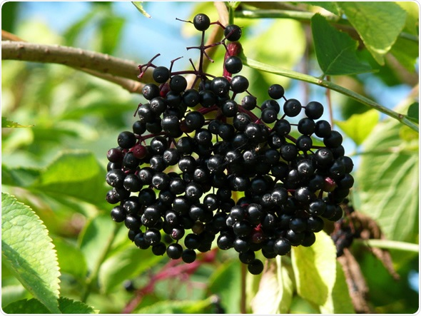

Avocade Tree
The avocado tree needs a warm climate, little wind, and well aerated soil to thrive. The trees are partially self pollinating, but are more effectively grown through grafting or its fruit’s seed.
Fun Fact
An avocado fruit is a type of berry.
African Tulip Tree
Spathodea is a monotypic genus in the flowering plant family Bignoniaceae. The single species it contains, Spathodea campanulata, is commonly known as the African tulip tree. The tree grows between 7–25 m tall.
Fun Fact
The tree grows between 7–25 m tall.

Areca palm Tree
Areca palm found in humid tropical forests from the islands of the Philippines, Malaysia and India, across Southeast Asia to Melanesia. The generic name Areca is derived from a name used locally on the Malabar Coast of India.
Fun Fact
Areca is a genus of 51 species of palms in the family Arecaceae.
Banana Tree
The banana plant grows to be tall like a tree, but has no trunk: it is simply a cluster of large leaf stalks. This technically classifies it as an herb.
Fun Fact
Banana fruits are mildly radioactive.
Birch Tree
Birch trees are characterized by their thin, papery barks. There are about 50 species native to Europe and Asia.
Fun Fact
Birch bark was used by Native Americans to build canoes, wigwams, and bowls.

Bonsai Tree
A Bonsai Tree is not intended for production of food or for medicine. Instead, Bonsai practice focuses on long-term cultivation and shaping of one or more small trees growing in a container.
Fun Fact
Its name stems from the Japanese word, "盆栽", meaning 'tray planting'. It is an Asian art form of cultivation techniques to replicate large scale trees, on a smaller scale in a container.
Chinaberry
Melia azedarach, commonly known as the chinaberry tree, pride of India, bead-tree, Cape lilac, syringa berrytree, Persian lilac, Indian lilac, or white cedar, is a species of deciduous tree in the mahogany family, Meliaceae, that is native to Indomalaya and Australasia.
Fun Fact
Chinaberry is medium-sized tree that can reach 30 to 50 feet in height.
Cacoa Tree
Theobroma cacao, also called the cacao tree and the cocoa tree, is a small evergreen tree in the family Malvaceae, native to the deep tropical regions of Mesoamerica. Its seeds, cocoa beans, are used to make chocolate liquor, cocoa solids, cocoa butter and chocolate.
Fun Fact
The tree’s seeds are used to make chocolate.
Cherry Blossom Tree
Known as "sakura" in Japanese, these pale blooms stand for renewal and hope. An average Japanese Cherry Tree is around 25 feet tall, while some can grow to 50 feet tall with a 40-foot wide canopy.
Fun Fact
Typically, they only last about 16-20 years. Certain species can live much longer. Black Cherry Trees can live up to 250 years.
Douglas Fir Tree
The Douglas fir is an evergreen conifer species in the pine family, Pinaceae. It is native to western North America and is also known as Douglas-fir, Douglas spruce, Oregon pine, and Columbian pine.
Fun Fact
The thick bark of mature Douglas Fir trees, helps this tree survive forest fires with the only damage being blackened bark.

Desert Teak Tree
Tecomella undulata is a tree species, locally known as rohida found in Thar Desert regions of India and Pakistan. It is a medium-sized tree and is the main source of timber amongst the indigenous tree species of desert regions of Shekhawati and Marwar in Rajasthan.
Fun Fact
Tecomella undulata is called Desert tree
Durian Tree
The durian is the edible fruit of several tree species belonging to the genus Durio. There are 30 recognised Durio species, at least nine of which produce edible fruit, with over 300 named varieties in Thailand and 100 in Malaysia.
Fun Fact
Durain fruit contains of rare amino acid in plants.

Engelmann spruce Tree
Engelmann spruce commonly occurs with subalpine fir in areas with long, cold winters and short, cool summers. It grows best on deep, rich soils with adequate moisture.
Fun Fact
Specialty items such as violins, pianos, and aircraft parts are produced from Engelmann spruce.

Eastern cottonwood Tree
A rapid-growing, moisture-loving species that is found locally along streams and lakes. The cottonwood has been extensively planted as an ornamental tree along streets.
Fun Fact
It is not easy to destroy, for, once cut down, the stump continues to sprout vigorously.
